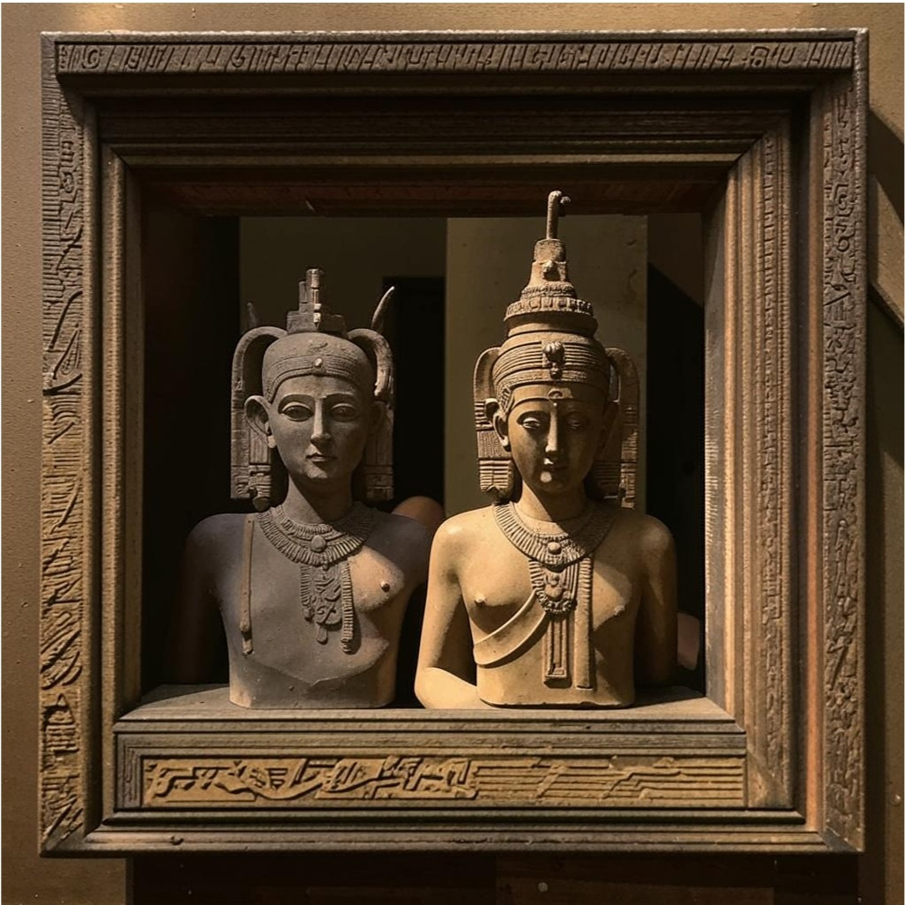

Возникновение чисел
Мы поговорим о системах счисления и истории их эволюции. Оказывается, что люди не всегда пользовались привычной нам десятичной системой счисления. Ещё с младшей школы вы знаете, что существуют римские цифры. А в Древнем Вавилоне вообще использовалась шестидесятеричная система счисления.
Без чисел практически невозможно себе представить жизнь современного человека. Благодаря числам мы можем обращаться с деньгами, покупать и продавать товары и услуги. Числа встречаются везде – на футболках спортсменов, часах, калькуляторе, ценниках.
История возникновения двоичной системы счисления
Двоичная система счисления Готфрид Вильгельм Лейбниц — немецкий математик и философ 17 века, изобретатель двоичной системы счисления. В своей статье Explication de l'Arithmétique Binaire он предложил и разработал систему, которая использовала только двоичные цифры 0 и 1 для арифметических операций. Двоичная система Лейбница использовала двоичную запись 0 и 1 для представления всех чисел десятичной системы. Он избегал таблиц умножения и создал простые правила вычислений. Его называют отцом двоичного кода, и это справедливо, поскольку он создал текущую двоичную систему счисления, которая используется во всех современных компьютерах и устройствах.
-
Идея использования двух символов для представления чисел имеет свои корни в древней истории человечества. Например, древние цивилизации, такие как египтяне и сумеречные жители, использовали пальцы рук для подсчета, что привело к использованию двух символов (0 и 1) для представления чисел.
-
Двоичная система не сложна, и имеет смысл только то, что ранние цивилизации использовали простую систему счисления для подсчета и отслеживания своей собственности и финансов. Древние египтяне использовали двоичную систему фракций «Глаз Гора» для измерения зерен и жидкостей.
-
Китайцы использовали свою бинарную систему И Цзин в религиозных целях. И Цзин использовал двоичный код для преобразования религиозных символов в значимые сообщения для своих последователей.
-
Двоичная система использовалась для элементарного счета и арифметики. Однако Лейбниц видел в этом потенциал величия. Следовательно, Джордж Буль обнаружил, что, объединив булеву алгебру с двоичной системой, он может управлять цифровыми схемами. Клод Шеннон использовал концепции Лейбница и Буля для создания первого современного компьютера, который он назвал Моделью К.
-
Сегодня двоичная система используется для управления цифровыми схемами в компьютерах. Однако задолго до того, как математики, такие как Лейбниц и Джордж Буль, сделали открытия по использованию двоичного кода в компьютерах, люди использовали его для других целей.
-
В 1937 году американский математик Клод Шеннон опубликовал свою работу "Математическая теория связи", где впервые были сформулированы основные принципы цифровой логики, включая использование двоичной системы счисления.
-
В 1940-х годах компьютерные ученые и инженеры, такие как Джон фон Нейман, начали активно применять двоичную систему в конструкции и проектировании компьютеров.
-
Двоичная система счисления стала стандартом в цифровой технике из-за своей простоты и надежности.
-
В компьютерах информация хранится и обрабатывается в виде битов (двоичных цифр). Каждый бит может принимать два значения: 0 или 1, что и соответствует двоичной системе.
-
Благодаря использованию двоичной системы счисления, компьютеры могут выполнять сложные операции и обрабатывать большие объемы данных с высокой точностью и скоростью.
Древние истоки
Развитие в информационных технологиях
С развитием электроники и появлением компьютеров в XX веке, двоичная система стала ключевой для представления информации и данных в цифровой форме.
Применение в компьютерах и цифровой технике
История восьмеричной системы счисления
-
Предпосылки
Восьмеричная система счисления использует восемь цифр: от 0 до 7. Она имеет свои корни в различных аспектах информационных технологий, включая архитектуру компьютеров и программное обеспечение.
-
Развитие в информационных технологиях
Восьмеричная система счисления получила широкое распространение благодаря развитию операционных систем UNIX в 1960-х и 1970-х годах.
Операционная система UNIX и ее производные, такие как Linux, используют восьмеричную систему для представления прав доступа к файлам и каталогам.
-
Применение в программировании
Восьмеричная система также широко используется в программировании, особенно при работе с битами и байтами данных.
Например, при работе с побитовыми операциями, восьмеричные числа могут быть использованы для представления наборов битов и флагов состояния в программном коде.
-
Удобство и применимость
Восьмеричная система часто используется в сетевых настройках, где необходимо указать адреса IP или другие параметры сети в восьмеричном формате.
Она также имеет применение в других областях, таких как архитектура компьютеров, системное программирование и обработка сигналов.
Исторические Системы Счисления
Древнеегипетская система счисления
Примерно в третьем тысячелетии до нашей эры египтяне придумали свою числовую систему, в которой для обозначения ключевых чисел 1, 10, 100 и так далее использовались специальные значки – иероглифы.
Все остальные числа составлялись из этих ключевых символов при помощи операции сложения. Например, чтобы изобразить 3252, рисовали три цветка лотоса (три тысячи), два свернутых пальмовых листа (две сотни), пять дуг (пять десятков) и два шеста (две единицы).
Величина числа не зависела от того, в каком порядке располагались составляющие его знаки: их можно было записывать сверху вниз, справа налево или вперемешку. Система счисления называется непозиционной, если в ней количественные значения символов, используемых для записи чисел, не зависят от их положения (места, позиции) в коде числа. Система счисления Древнего Египта является непозиционной.
Вавилонская система счисления
Вавилонцы использовали шестидесятеричную систему счисления, основанную на числе 60. Эта система имеет ряд преимуществ, так как 60 делится на множество чисел: 2, 3, 4, 5, 6, 10, 12, 15, 20, 30, и 60.
Ключевыми символами в вавилонской системе были символы для чисел 1 и 10, а также различные комбинации этих символов для обозначения чисел от 1 до 59. Например, число 23 записывалось как два десятка и три единицы, используя символы для 20 и 3 соответственно.
Вавилонцы также использовали знак, аналогичный нашему точке, для разделения целой части числа от дробной. Эта система была весьма продвинутой для своего времени и использовалась в торговле, астрономии и других сферах древневавилонской культуры.
Влияние на современную культуру:
- 60 минут в часе,
- 360 градусов в окружности,
- 12 месяцев в году (хотя это может быть обусловлено лунным календарем).
-
Даже спустя тысячи лет вавилонская система счисления продолжает оказывать влияние на
нашу повседневную жизнь. Примеры включают:
Римская система счисления
Мы уже знаем, что в Древнем Риме существовали следующие обозначения:
- I = 1;
- V = 5;
- X = 10;
- L = 50;
- C = 100;
- D = 500;
- M = 1000;
Обозначения чисел 100, 500 и 1000 пошли от первых букв соответствующих латинских слов (Centum – сто, Demimille – половина тысячи, Mille – тысяча).
Чтобы записать число, римляне использовали не только сложение, но и вычитание ключевых чисел. При этом применялось следующее правило: значение каждого меньшего знака, поставленного слева от большего, вычитается из значения большего знака. Например, запись IX обозначает число 9, а запись XI — число 11.
Десятичное число 28 представляется как XXVIII, а 99 — как XCIX.
- Где можно встретить римские цифры?
- На многих часах от настенных до наручных, где часы обозначены от I до XII.
- На старых постройках, сооружениях и памятниках архитектуры, где год возведения указан римскими числами.
- В документах при обозначении уровней заголовков для удобства восприятия информации.
- В книгах и рукописях для обозначения порядка глав и частей с целью их структуризации.
- В именах королей, царей и прочих важных персон или обычных людей, когда ребенка называют в честь лица из предыдущего поколения.
История шестнадцатеричной системы счисления
-
Предпосылки
Шестнадцатеричная система счисления, также известная как шестнадцатеричная или hex система, использует 16 цифр: от 0 до 9 и буквы от A до F. Эта система имеет множество применений в информационных технологиях, включая программирование и архитектуру компьютеров.
-
Развитие в информационных технологиях
Шестнадцатеричная система получила широкое распространение благодаря своей удобной форме представления данных в компьютерных системах.
Каждая цифра шестнадцатеричной системы представляет четыре бита (или полубайт), что делает ее удобной для работы с бинарными данными в компьютерных системах.
Шестнадцатеричная система используется в различных аспектах информационных технологий, включая программирование, обработку данных и архитектуру компьютеров.
-
Применение в программировании
Шестнадцатеричная система часто используется в программировании для представления адресов памяти, байтовых значений и других данных.
В языках программирования и средах разработки часто используется шестнадцатеричная система для удобства чтения и записи бинарных данных.
-
Удобство и применимость
Шестнадцатеричная система считается более удобной и компактной по сравнению с двоичной системой при работе с большими объемами данных.
Она широко применяется в архитектуре компьютеров, в сетевых настройках, в программировании микроконтроллеров и других областях информационных технологий.